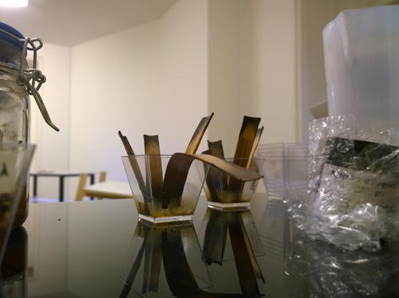
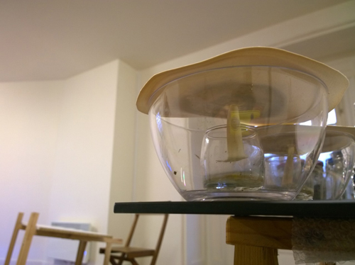
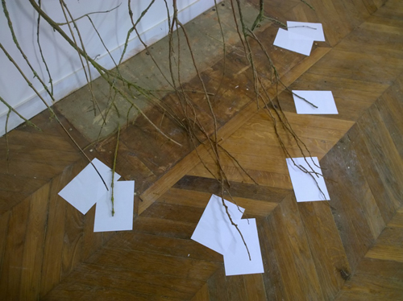
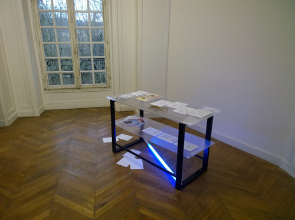
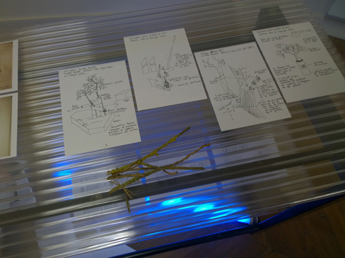

Vue d'exposition,L'atelier de Chromatographies, Delphine Chevrot, 2014.
Vue d'exposition,L'atelier de Chromatographies, Delphine Chevrot, 2014.Les installations présentées lors de l'after work, expose les recherches en cours et l'atelier permanent du LAAB, se fige le temps d'une soirée. L'espace d'installation sous cette forme permet le déploiement d'un potentiel environnant, interne et externe, aux pièces, sur un état possible de l'ensemble. Dans l'atelier co-existe l'espace de construction et d'exposition du travail.
La chromatographie du sol est une méthode physico-chimique de séparation des espèces présentes dans un échantillon de terre en phase homogène liquide.
Elle permet d'analyser les substances présentes dans le sol par une lecture des couleurs et des formes. Il s'agit de la première étape de cette expérience : l'installation de l'atelier de chromatographie du sol du Château Éphémère.

Détail de l'installation, L'atelier de Chromatographies, Delphine Chevrot, 2014.

Détail de l'installation, L'atelier de Chromatographies, Delphine Chevrot, 2014.

Exposer la recherche, Détail de l'installation, Sabrina Issa, 2014.

Exposer la recherche, Vue de l'installation, Sabrina Issa, 2014.
Structure métal, plaque de polucarbonates, néon et feuillet A5, 110 x 50 cm.

Exposer la recherche, Détail de l'installation, Sabrina Issa, 2014.